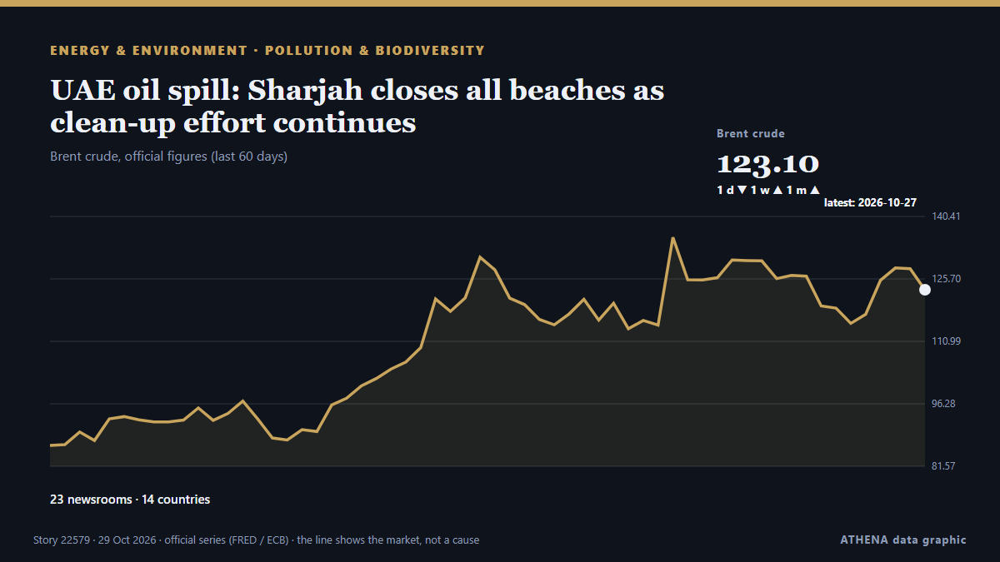

UAE oil spill: Sharjah closes all beaches as clean-up effort continues

UAE authorities are working to contain an oil spill from a supertanker in the Arabian Gulf, with Umm Al Quwain Municipality intensifying efforts to limit pollution and protect marine habitats. de The National
Relayé de façon indépendante par 24 médias dans 14 pays depuis le 22 oct. ; premier à l'annoncer : The National ; la couverture faiblit. ATHENA juge le risque accru (5.5/10), surtout en raison de la gravité des dommages décrits et de sa portée géographique et sectorielle. La confiance est de 90 % (élevée) : 24 médias indépendants le confirment, avec une fiabilité moyenne des sources de 79 %. Qui l'a rapporté : 12 médias en Émirats arabes unis · United Arab Emirates, 3 médias en Pakistan, 3 médias en Chine · China. La couverture s'est étendue de 22 oct. à 28 oct., sur 130 heures.
Pourquoi c'est important: Les évolutions de l'énergie et des ressources pèsent sur les prix des carburants et de l'électricité, la sécurité d'approvisionnement et les engagements climatiques.
Ce qui a changé : 6 nouveaux articles de 4 rédactions dans les 24 heures jusqu'au 29 oct..
Premier titre : UAE: Oil Spill from Tanker Affects Beaches in Umm Al Quwain
Les titres sont affichés en anglais, tels que publiés.
En un coup d'œil
Sélectionné, noté et rédigé par la méthodologie publiée d'ATHENA. Aucun rédacteur n'intervient sur un événement en particulier. Comment il est produit ›
| 22 Oct 23:34 UTC | 8 |
|---|---|
| 23 Oct 05:34 UTC | 9 |
| 23 Oct 11:34 UTC | 5 |
| 23 Oct 17:34 UTC | 1 |
| 23 Oct 23:34 UTC | 3 |
| 24 Oct 05:34 UTC | 1 |
| 24 Oct 11:34 UTC | 1 |
| 24 Oct 17:34 UTC | 0 |
| 24 Oct 23:34 UTC | 0 |
| 25 Oct 05:34 UTC | 0 |
| 25 Oct 11:34 UTC | 1 |
| 25 Oct 17:34 UTC | 0 |
| 25 Oct 23:34 UTC | 1 |
| 26 Oct 05:34 UTC | 5 |
| 26 Oct 11:34 UTC | 1 |
| 26 Oct 17:34 UTC | 1 |
| 26 Oct 23:34 UTC | 0 |
| 27 Oct 05:34 UTC | 1 |
| 27 Oct 11:34 UTC | 0 |
| 27 Oct 17:34 UTC | 1 |
| 27 Oct 23:34 UTC | 1 |
| 28 Oct 05:34 UTC | 2 |
| 28 Oct 11:34 UTC | 2 |
| 28 Oct 17:34 UTC | 0 |
| 28 Oct 23:34 UTC | 0 |
| 29 Oct 05:34 UTC | 3 |
| 23 Oct 06:41 UTC | 5.0 |
|---|---|
| 23 Oct 06:43 UTC | 5.7 |
| 23 Oct 13:55 UTC | 5.3 |
| 26 Oct 18:13 UTC | 5.7 |
| 30 Oct 09:57 UTC | 5.5 |
| 30 Oct 09:57 UTC | 5.5 |
Pourquoi ces chiffres
Importance
Risque
Confiance
La couverture : qui l'a annoncé, et quand
titre tel que publié · ouvre l'original- The National · Émirats arabes unis · United Arab EmiratesUAE confirms oil spill off coast causing strong fuel smell
- The National · Émirats arabes unis · United Arab EmiratesUAE confirms oil spill off coast and temporarily closes Umm Al Quwain beaches
- Business Recorder · PakistanUAE says tanker oil spill affects beaches in Umm Al Quwain
- Arab News · Arabie saoudite · Saudi ArabiaOil spill off UAE coast prompts beach closures, cleanup effort
- Middle East Eye · INTUAE announce temporary closure of Umm Al Quwain beaches
- Anadolu Agency (English) · Turquie · TurkeyUAE detects tanker oil spill affecting beaches in Umm Al Quwain
- Asharq Al-Awsat (English) · Arabie saoudite · Saudi ArabiaUAE: Oil Spill from Tanker Affects Beaches in Umm Al Quwain
- The National · Émirats arabes unis · United Arab EmiratesUAE tackles oil spill, Yemen warns of Houthi child recruitment and Oman strengthens UK investment ties
- Arab Times · Koweït · KuwaitUAE Closes Umm Al Quwain Beaches After Tanker Oil Spill
- Middle East Eye · INTMorning update
- Gulf News · Émirats arabes unis · United Arab EmiratesUAE mystery smells explained: How reports led to oil spill discovery
- Arabian Business · Émirats arabes unis · United Arab EmiratesUAE confirms oil spill off Umm Al Quwain as source of mysterious smell
- NEWS.am (English) · Arménie · ArmeniaReuters: Oil spill from tanker detected off UAE coast
- Xinhua (English) — page reader · Chine · ChinaOil spill prompts closure of beaches in UAE's Umm Al Quwain
- Euronews English · FranceOil spill hits UAE beaches as tanker attacks multiply near Hormuz
- Gulf News · Émirats arabes unis · United Arab EmiratesUAE oil spill: Umm Al Quwain steps up efforts to contain slick along emirate’s beaches
- Al-Monitor · États-Unis · United StatesUAE battles tanker oil spill as war's environmental toll mounts
- Gulf News · Émirats arabes unis · United Arab EmiratesSharjah temporarily closes Al Hamriyah Beach over oil spill concerns
- BBC News · Royaume-Uni · United KingdomOil spill washes up on UAE beaches after tanker strike
- Gulf News · Émirats arabes unis · United Arab EmiratesUAE residents’ evening update: Oil spill closes UAQ beaches, flight updates, Netanyahu’s West Bank move
- The New Arab · INTUAE reports oil spill from tanker as ships attacked during war
- Xinhua (English) — page reader · Chine · ChinaNorthern UAE beach closed as precaution after tanker oil spill
- Business Recorder · PakistanUAE reports oil spill from tanker
- Al Jazeera English · QatarMassive oil slick seen weeks after tanker struck off UAE’s coast
- The National · Émirats arabes unis · United Arab EmiratesThe fight to save marine life: how specialists are tackling the oil spill off the UAE coast
- Gulf News · Émirats arabes unis · United Arab EmiratesTanker oil spill in UAE: What we know so far about Umm Al Quwain beach closures and the smell
- Business Recorder · PakistanUAE's Ras Al Khaimah shuts all beaches as neighbours grapple with oil spill
- Al Jazeera English · QatarOil slick from tanker in Hormuz Strait washes up on UAE beaches
- Gulf News · Émirats arabes unis · United Arab EmiratesUAE’s massive beach clean-up after oil spill concerns and mystery smell: All you need to know
- Oman Observer · OmanOil spill off UAE widens, satellite images show, prompting more beach closures
- The Straits Times · Singapour · SingaporeOil spill off UAE widens, prompting more beach closures
- Al-Monitor · États-Unis · United StatesOil spill off UAE widens, satellite images show, prompting more beach closures
- Cyprus Mail · Chypre · CyprusUAE oil spill spreads, forcing more beach closures
- The Independent · Royaume-Uni · United KingdomSatellite images show huge oil spill from damaged tanker that triggered beach closures across UAE
- ProtoThema English ·Oil spill from tanker off the United Arab Emirates spreads, beaches close
- The New Arab · INTOil spill off UAE widens, prompting more beach closures
- Gulf News · Émirats arabes unis · United Arab EmiratesUAE oil spill: Beach clean-up update and advice for residents
- CGTN (World) · Chine · ChinaSatellite images show oil spill on UAE coast
- The New Arab · INTExperts warn of effects of slick as oil seen on UAE beach
- Al Jazeera English · QatarHormuz oil spill forces closure of UAE beaches